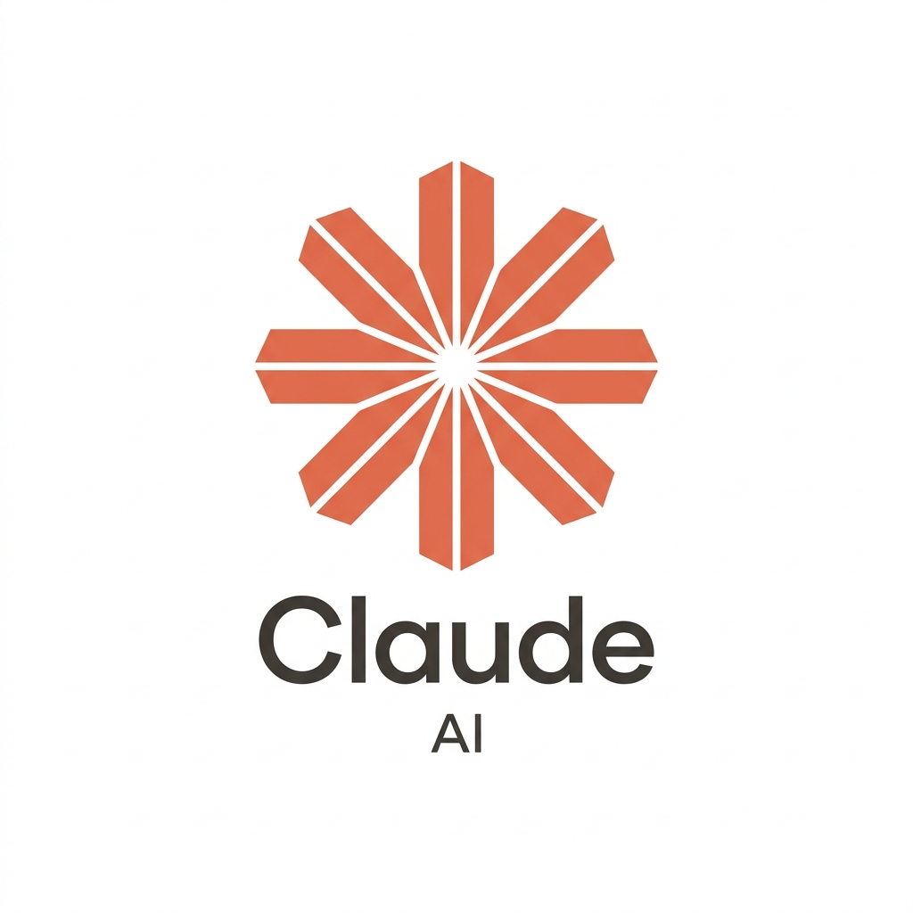

Modelo de linguagem de ponta desenvolvido pela Anthropic, reconhecido por seu raciocínio lógico avançado, capacidade de lidar com textos extensos e geração precisa de código.
Acessar ferramentaO Claude é uma família de modelos de inteligência artificial de última geração desenvolvida pela Anthropic, empresa focada na pesquisa e segurança de IA (Constitutional AI). Ele foi construído para ser prestativo, confiável e excepcionalmente articulado em conversas complexas.
Com versões como Claude Sonnet, Opus e Haiku, a plataforma se destaca na compreensão de nuances, leitura de centenas de páginas de documentos em segundos e resolução de problemas técnicos de alta complexidade.
O Claude é amplamente procurado para análise profunda de documentos (PDFs, relatórios técnicos, livros), redação de alta qualidade sem repetições artificiais, criação e depuração de softwares inteiros e suporte em tomadas de decisões estratégicas.
Na área de programação, sua habilidade de estruturar arquiteturas, explicar erros sutis e gerar código robusto o tornou um dos favoritos da comunidade de desenvolvedores globais.
O Claude oferece o recurso inovador de Artifacts (Artefatos), que permite visualizar páginas web interativas, códigos executáveis e diagramas lado a lado com a conversa. Além disso, conta com suporte nativo a processamento de imagens e anexos em múltiplos formatos.
Sim, o Claude pode ser utilizado gratuitamente no plano básico na web e em aplicativos móveis. Para usuários que demandam uso intensivo, acesso prioritário aos modelos mais poderosos (como o Claude 3.5 Sonnet) e cotas elevadas, a Anthropic oferece a assinatura Claude Pro.
Profissionais de redação, desenvolvedores de software, pesquisadores acadêmicos, analistas de negócios e qualquer pessoa que busque uma IA com respostas ponderadas, menor índice de alucinação e alta capacidade analítica.
Sem dúvida. O Claude é amplamente considerado uma das IAs mais completas e refinadas da atualidade, combinando um tom natural com precisão de raciocínio ímpar.